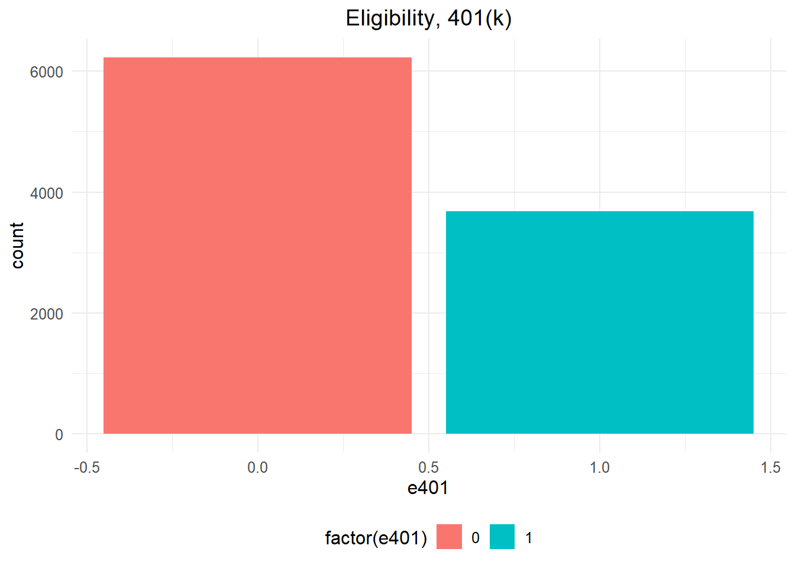
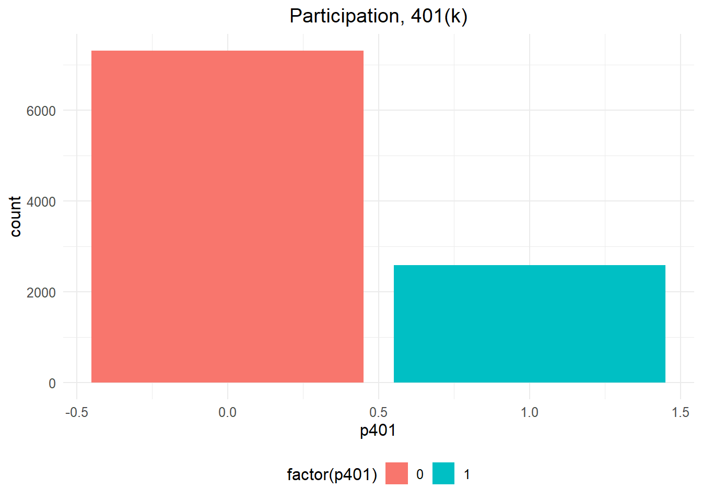
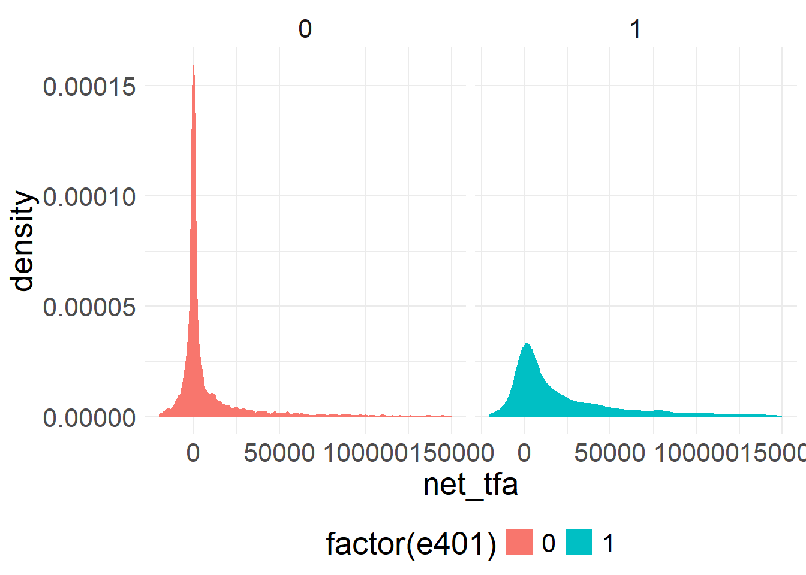
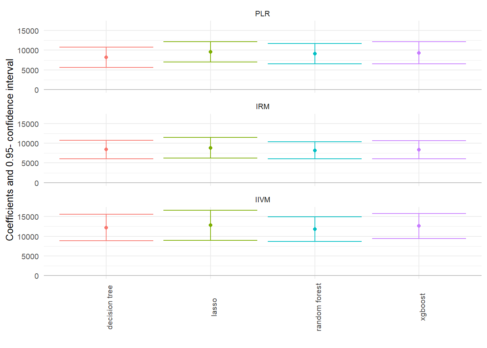

install.packages(c("tidyverse", "hdm", "broom", "modelsummary", "gt"))Causal inference using Machine Learning
Causal Inference
Machine Learning
Double Machine Learning
R
Tutorial
Causal inference using Machine Learning
Tutorial.
PART 1: Double Lasso for Testing the Convergence Hypothesis
Introduction
We provide an empirical example of partialling-out with Lasso (often called Double Lasso) to estimate the regression coefficient \(\beta_1\) in the high-dimensional linear regression model:
\[ Y = \beta_1 D + \beta_2'W + \epsilon. \]
Specifically, we are interested in how the rates at which economies of different countries grow (\(Y\)) are related to the initial wealth levels in each country (\(D\)), while controlling for institutional, educational, and other country characteristics (\(W\)).
The relationship is captured by \(\beta_1\), the speed of convergence/divergence:
- \(\beta_1 < 0\): poorer countries catch up (convergence)
- \(\beta_1 > 0\): poorer countries fall behind (divergence)
Our inference question is:
Our inference question here is: do poor countries grow faster than rich countries, controlling for educational and other characteristics? In other words, is the speed of convergence negative: \(\beta_1 <0?\)
This idea is closely related to the Convergence Hypothesis predicted by the Solow Growth Model. This is a structural economic model. Under some strong assumptions (not discussed here), this predictive exercise can be given a causal interpretation.
In this dataset: - \(Y\) is the realised annual growth rate of a country’s wealth (GDP per capita growth), - \(D\) is the initial level of wealth (GDP per capita at baseline), - \(W\) includes education, institutions, openness, political stability, and similar controls.
Setup
TipInstall packages (run once)
If you are running this notebook for the first time, install these packages.
This chunk is set to eval: false so it will not run automatically when you render.
library(tidyverse)
library(hdm) # high-dimensional methods including rlasso and rlassoEffect
library(broom) # tidy model summaries
library(modelsummary) # clean regression tables
library(gt)Data analysis
We consider the dataset GrowthData, which is included in the package hdm.
growth <- as_tibble(GrowthData) |> select(-intercept)growth |> head(5)# A tibble: 5 × 62
Outcome gdpsh465 bmp1l freeop freetar h65 hm65 hf65 p65 pm65 pf65
<dbl> <dbl> <dbl> <dbl> <dbl> <dbl> <dbl> <dbl> <dbl> <dbl> <dbl>
1 -0.0243 6.59 0.284 0.153 0.0439 0.007 0.013 0.001 0.29 0.37 0.21
2 0.100 6.83 0.614 0.314 0.0618 0.019 0.032 0.007 0.91 1 0.65
3 0.0671 8.90 0 0.204 0.00919 0.26 0.325 0.201 1 1 1
4 0.0641 7.57 0.200 0.249 0.0363 0.061 0.07 0.051 1 1 1
5 0.0279 7.16 0.174 0.299 0.0374 0.017 0.027 0.007 0.82 0.85 0.81
# ℹ 51 more variables: s65 <dbl>, sm65 <dbl>, sf65 <dbl>, fert65 <dbl>,
# mort65 <dbl>, lifee065 <dbl>, gpop1 <dbl>, fert1 <dbl>, mort1 <dbl>,
# invsh41 <dbl>, geetot1 <dbl>, geerec1 <dbl>, gde1 <dbl>, govwb1 <dbl>,
# govsh41 <dbl>, gvxdxe41 <dbl>, high65 <dbl>, highm65 <dbl>, highf65 <dbl>,
# highc65 <dbl>, highcm65 <dbl>, highcf65 <dbl>, human65 <dbl>,
# humanm65 <dbl>, humanf65 <dbl>, hyr65 <dbl>, hyrm65 <dbl>, hyrf65 <dbl>,
# no65 <dbl>, nom65 <dbl>, nof65 <dbl>, pinstab1 <dbl>, pop65 <int>, …Exercise 1: First, get familiar with the data. Determine the dimensions of our data set and calculate the \(p/n\) ratio. Do we have a high-dimensional setting?
First, check the number of observations and variables.
A simple way to judge whether we are in a “high-dimensional” regime is to compare:
\(n\) = number of observations (countries)
\(p\) = number of variables (columns)
If \(p/n\) is not small, OLS can become unstable (high variance, noisy estimates), especially when many controls are weakly related to the outcome.
Compute \(n\), \(p\), and \(p/n\):
growth |>
summarise(n = n()) |>
mutate(
p = ncol(growth),
p_over_n = p / n
)# A tibble: 1 × 3
n p p_over_n
<int> <int> <dbl>
1 90 62 0.689We can also print the dimensions directly.
dim(growth)[1] 90 62The sample contains about 90 countries and about 63 variables, so \(p/n\) is not small. In this setting, the least squares method may provide a noisy estimate of \(\beta_1\), especially when many controls are weakly informative.
This is one reason methods based on regularisation (such as Lasso) become useful: they help us focus on the most relevant controls, rather than estimating everything with equal weight.
Exercise 2: To check the convergence hypothesis, analyze the relationship between the country’s growth rate \(Y\) and the country’s other characteristics by running a linear regression (ols) in the first step. Determine the regression coefficient \(\beta_1\) of the target regressor gdpsh465 (initial wealth level, \(D\)), its 95% confidence interval and the standard error.
We begin by estimating a standard regression model using all available controls:
\[ Outcome = \alpha + \beta_1 \, gdpsh465 + \text{(other controls)} + \epsilon. \]
Our focus is the coefficient on gdpsh465 (initial GDP per capita), because it corresponds to the target regressor \(D\) and the parameter \(\beta_1\).
Fit the model
ols_fit <- lm(Outcome ~ ., data = growth)Extract the coefficient of interest (gdpsh465)
Instead of printing the full table (which is long), we extract only the one coefficient we care about.
ols_key <- tidy(ols_fit, conf.int = TRUE) |>
filter(term == "gdpsh465")
ols_key# A tibble: 1 × 7
term estimate std.error statistic p.value conf.low conf.high
<chr> <dbl> <dbl> <dbl> <dbl> <dbl> <dbl>
1 gdpsh465 -0.00938 0.0299 -0.314 0.756 -0.0706 0.0518How to read this row:
estimate: our estimate of \(\beta_1\)std.error: the standard error of the estimateconf.lowandconf.high: the 95% confidence interval
If the confidence interval includes 0, the evidence for convergence/divergence is weaker (based on this model). So, least squares provides a rather noisy estimate of the speed of convergence, and does not allow us to answer the question about the convergence hypothesis as the confidence interval includes zero.
If you want a more “report-style” table:
modelsummary(
list("OLS (all controls)" = ols_fit),
coef_map = c("gdpsh465" = "Initial GDP per capita (gdpsh465)"),
statistic = c("std.error", "conf.int"),
output = "gt"
)| OLS (all controls) | |
|---|---|
| Initial GDP per capita (gdpsh465) | -0.009 |
| (0.030) | |
| [-0.071, 0.052] | |
| Num.Obs. | 90 |
| R2 | 0.887 |
| R2 Adj. | 0.641 |
| AIC | -350.5 |
| BIC | -193.0 |
| Log.Lik. | 238.237 |
| RMSE | 0.02 |
Exercise 3: In contrast, use the partialling-out approach based on lasso regression (“Double Lasso”). Again, determine the regression coefficient \(\beta_1\) of the target regressor gdpsh465 (initial wealth level, \(D\)), its 95% confidence interval and the standard error.
When we have many controls (and especially when \(p/n\) is not small), a full OLS regression can become noisy and unstable. Double Lasso (also called partialling-out with Lasso) is designed to estimate \(\beta_1\) while handling high-dimensional controls.
The key idea is:
Use Lasso to partial out controls \(W\) from the outcome \(Y\)
Use Lasso to partial out controls \(W\) from the regressor \(D\)
Regress the residualised outcome on the residualised regressor
This helps ensure the controls we include are the ones that matter for predicting either \(Y\) or \(D\).
Step 1: Define \(Y\), \(D\), and \(W\)
We define:
\(Y\):
Outcome\(D\):
gdpsh465\(W\): everything else (all other columns)
We use name-based selection (more readable and safer than column positions).
Y <- growth |> pull(Outcome)
D <- growth |> pull(gdpsh465)
W <- growth |> select(-Outcome, -gdpsh465) |> as.matrix()Step 2: Partial out \(W\) from \(Y\) using Lasso
Here we regress \(Y\) on \(W\) using Lasso, and keep the residuals:
rY <- rlasso(x = W, y = Y)$resrY is the part of the outcome not explained by controls.
Step 3: Partial out \(W\) from \(D\) using Lasso
Now we regress \(D\) on \(W\) using Lasso, and keep the residuals:
rD <- rlasso(x = W, y = D)$resrD is the part of the regressor not explained by controls.
Step 4: Regress residualised \(Y\) on residualised \(D\)
Finally, regress rY on rD:
dl_fit <- lm(rY ~ rD)This last step estimates \(\beta_1\) using the variation that remains after removing what controls explain.
Step 5: Extract the Double Lasso estimate
dl_key <- tidy(dl_fit, conf.int = TRUE) |>
filter(term == "rD")
dl_key# A tibble: 1 × 7
term estimate std.error statistic p.value conf.low conf.high
<chr> <dbl> <dbl> <dbl> <dbl> <dbl> <dbl>
1 rD -0.0498 0.0139 -3.57 0.000573 -0.0775 -0.0221Lasso provides a more precise estimate (lower standard error). The Lasso based point estimate is about \(-5\%\) and the \(95\%\) confidence interval for the (annual) rate of convergence is \(7.8\%\) to \(2.2\%\). This empirical evidence does support the convergence hypothesis.
Note: Alternatively, one could also use the rlassoEffect funtion from the hdm package that directly applies the partialling-out approach.
dl_effect <- rlassoEffect(x = W, y = Y, d = D, method = "partialling out")
dl_effect
Call:
rlassoEffect(x = W, y = Y, d = D, method = "partialling out")
Coefficients:
[1] -0.04981Exercise 4: Finally, let us have a look at the results. Compare the results of Exercise 2 and Exercise 3 and interpret your findings.
Now we compare the two estimates (OLS and Double Lasso) side-by-side.
compare_tbl <- bind_rows(
ols_key |> transmute(model = "OLS", estimate, std.error, conf.low, conf.high),
dl_key |> transmute(model = "Double Lasso", estimate, std.error, conf.low, conf.high)
) |>
mutate(across(where(is.numeric), ~round(.x, 4)))
compare_tbl# A tibble: 2 × 5
model estimate std.error conf.low conf.high
<chr> <dbl> <dbl> <dbl> <dbl>
1 OLS -0.0094 0.0299 -0.0706 0.0518
2 Double Lasso -0.0498 0.0139 -0.0775 -0.0221The least square method provides a rather noisy estimate of the speed of convergence. We cannot answer the question of whether poor countries grow faster than rich countries. The least square method does not work when the ratio \(p/n\) is large.
In sharp contrast, partialling-out via Lasso provides a more precise estimate. The Lasso-based point estimate is \(-5\%\) and the \(95\%\) confidence interval for the (annual) rate of convergence \([-7.8\%,-2.2\%]\) only includes negative numbers. This empirical evidence does support the convergence hypothesis.
Interpreting the results
For the OLS regression, the estimated coefficient on gdpsh465 is:
- estimate = -0.0094
- 95% CI = [-0.0706, 0.0518]
This interval includes zero, so OLS does not provide strong evidence for convergence or divergence in this specification. This does not mean OLS is “wrong”, but in settings with many controls relative to sample size, OLS estimates can be imprecise (large standard errors), making inference difficult.
For Double Lasso (partialling-out), the estimated coefficient is:
- estimate = -0.0498
- 95% CI = [-0.0775, -0.0221]
This interval is fully below zero. Since \(\beta_1 < 0\) corresponds to convergence, the Double Lasso results provide evidence consistent with the convergence hypothesis: poorer countries tend to grow faster than richer countries, conditional on the selected controls.
Note
Causal interpretation (important):
A causal interpretation requires additional assumptions (e.g., after controlling for \((W)\), there are no unobserved confounders affecting both initial wealth and subsequent growth). Double Lasso helps with high-dimensional controls, but it does not automatically guarantee causality.
PART 2: Impact of 401(k) on Financial Wealth using Double Machine Learning
In this real-data example, we illustrate how the DoubleML package can be used to estimate the effect of 401(k) eligibility and participation on accumulated assets. The 401(k) data set has been analyzed in several studies, among others Chernozhukov et al. (2018).
401(k) plans are pension accounts sponsored by employers. The key problem in determining the effect of participation in 401(k) plans on accumulated assets is saver heterogeneity coupled with the fact that the decision to enroll in a 401(k) is non-random. It is generally recognized that some people have a higher preference for saving than others. It also seems likely that those individuals with high unobserved preference for saving would be most likely to choose to participate in tax-advantaged retirement savings plans and would tend to have otherwise high amounts of accumulated assets. The presence of unobserved savings preferences with these properties then implies that conventional estimates that do not account for saver heterogeneity and endogeneity of participation will be biased upward, tending to overstate the savings effects of 401(k) participation.
One can argue that eligibility for enrolling in a 401(k) plan in this data can be taken as exogenous after conditioning on a few observables of which the most important for their argument is income. The basic idea is that, at least around the time 401(k)’s initially became available, people were unlikely to be basing their employment decisions on whether an employer offered a 401(k) but would instead focus on income and other aspects of the job.
Setup
TipInstall packages (run once)
If you are running this notebook for the first time, install these packages.
This chunk is set to eval: false so it will not run automatically when you render.
install.packages(c("remotes", "mlr3", "mlr3learners", "DoubleML", "glmnet", "ranger", "xgboost", "data.table"))library(remotes)
library(mlr3)
library(mlr3learners)
library(DoubleML)
library(glmnet)
library(ranger)
library(xgboost)
library(tidyverse)
# suppress messages during fitting
lgr::get_logger("mlr3")$set_threshold("warn")Data
The preprocessed data can be fetched by calling fetch_401k(). The arguments polynomial_features and instrument can be used to replicate the models used in Chernozhukov et al. (2018). Note that an internet connection is required for loading the data. We start with a baseline specification of the regression model and reload the data later in case we want to use another specification.
# Load data (instrument = TRUE is important for IIVM later)
data <- fetch_401k(return_type = "data.table", instrument = TRUE)
str(data)Classes 'data.table' and 'data.frame': 9915 obs. of 12 variables:
$ net_tfa: num 0 1015 -2000 15000 0 ...
$ age : num 47 36 37 58 32 34 28 54 43 32 ...
$ inc : num 6765 28452 3300 52590 21804 ...
$ educ : num 8 16 12 16 11 16 12 11 14 18 ...
$ fsize : num 2 1 6 2 1 1 3 3 2 3 ...
$ marr : num 0 0 0 1 0 0 1 0 1 1 ...
$ twoearn: num 0 0 0 1 0 0 1 0 1 0 ...
$ db : num 0 0 1 0 0 0 0 0 1 0 ...
$ pira : num 0 0 0 0 0 1 1 0 1 0 ...
$ hown : num 1 1 0 1 1 1 1 1 1 1 ...
$ p401 : int 0 0 0 0 0 0 0 0 0 0 ...
$ e401 : int 0 0 0 0 0 0 0 0 0 0 ...
- attr(*, ".internal.selfref")=<externalptr> See the “Details” section on the description of the data set, which can be accessed by typing help(fetch_401k).
We load the 401(k) dataset. We keep instrument = TRUE because we will use eligibility (e401) as an instrument later in the IV model.
The data consist of 9,915 observations at the household level drawn from the 1991 Survey of Income and Program Participation (SIPP). All the variables are referred to 1990. We use net financial assets (net_tfa) as the outcome variable, \(Y\), in our analysis. The net financial assets are computed as the sum of IRA balances, 401(k) balances, checking accounts, saving bonds, other interest-earning accounts, other interest-earning assets, stocks, and mutual funds less non mortgage debts.
Among the \(9915\) individuals, \(3682\) are eligible to participate in the program. The variable e401 indicates eligibility and p401 indicates participation, respectively.
Quick EDA
Eligibility and participation are binary variables.
e401: eligible for 401(k)p401: participates in 401(k)net_tfa: net total financial assets (outcome)
Eligibility
ggplot(data, aes(x = e401, fill = factor(e401))) +
geom_bar() +
theme_minimal() +
ggtitle("Eligibility, 401(k)") +
theme(
legend.position = "bottom",
plot.title = element_text(hjust = 0.5),
text = element_text(size = 12)
)
Participation
Participation is a choice, so this plot often reflects selection. People who participate may differ systematically (income, job type, financial literacy etc.). So, the raw difference between participants and non-participants is not causal.
ggplot(data, aes(x = p401, fill = factor(p401))) +
geom_bar() +
theme_minimal() +
ggtitle("Participation, 401(k)") +
theme(
legend.position = "bottom",
plot.title = element_text(hjust = 0.5),
text = element_text(size = 12)
)
Outcome distribution by eligibility
Eligibility is highly associated with financial wealth: but eligibility is not randomly assigned in real life (it’s tied to employer/plan rules), so we still need to adjust for covariates. The density plot motivates the causal question, but doesn’t answer it.
ggplot(data, aes(x = net_tfa, color = factor(e401), fill = factor(e401))) +
geom_density() +
xlim(c(-20000, 150000)) +
facet_wrap(. ~ e401) +
theme_minimal() +
theme(
legend.position = "bottom",
text = element_text(size = 20)
)Warning: Removed 340 rows containing non-finite outside the scale range
(`stat_density()`).
A simple baseline: unconditional mean differences
Before using DML, it is helpful to see the raw difference in average outcomes.
As a first estimate, we calculate the unconditional average predictive effect (APE) of 401(k) eligibility on accumulated assets. This effect corresponds to the average treatment effect if 401(k) eligibility would be assigned to individuals in an entirely randomized way.
APE_e401_uncond <- data |>
group_by(e401) |>
summarise(mean_net_tfa = mean(net_tfa), .groups = "drop") |>
arrange(e401) |>
summarise(diff = mean_net_tfa[e401 == 1] - mean_net_tfa[e401 == 0]) |>
pull(diff)
round(APE_e401_uncond, 2)[1] 19559.34The unconditional APE of e401 is about \(19559\).
Among the \(3682\) individuals that are eligible, \(2594\) decided to participate in the program. The unconditional APE of p401 is about \(27372\):
APE_p401_uncond <- data |>
group_by(p401) |>
summarise(mean_net_tfa = mean(net_tfa), .groups = "drop") |>
arrange(p401) |>
summarise(diff = mean_net_tfa[p401 == 1] - mean_net_tfa[p401 == 0]) |>
pull(diff)
round(APE_p401_uncond, 2)[1] 27371.58These raw differences are not causal. They ignore differences in age, income, education, and other confounders. It mixes treatment effects with differences in who ends up eligible/participating
The DoubleML package: Estimating the Average Treatment Effect of 401(k) Eligibility on Net Financial Assets
Let’s use the package DoubleML to estimate the average treatment effect of 401(k) eligibility, i.e. e401, and participation, i.e. p401, on net financial assets net_tfa.
We first look at the treatment effect of e401 on net total financial assets. We give estimates of the ATE in the linear model
\[ \begin{equation*} Y = D \alpha + f(X)'\beta+ \epsilon, \end{equation*} \]
where \(f(X)\) is a dictonary applied to the raw regressors. \(X\) contains variables on marital status, two-earner status, defined benefit pension status, IRA participation, home ownership, family size, education, age, and income.
In the following, we will consider two different models,
a basic model specification that includes the raw regressors, i.e., \(f(X) = X\), and
a flexible model specification, where \(f(X)\) includes the raw regressors \(X\) and the orthogonal polynomials of degree 2 for the variables family size education, age, and income.
We will use the basic model specification whenever we use nonlinear methods, for example regression trees or random forests, and use the flexible model for linear methods such as the lasso. There are, of course, multiple ways how the model can be specified even more flexibly, for example including interactions of variable and higher order interaction. However, for the sake of simplicity we stick to the specification above. Users who are interested in varying the model can manipulate the model formula below (formula_flex), for example implementing the orignal specification in Chernozhukov et al. (2018).
In the first step, we report estimates of the average treatment effect (ATE) of 401(k) eligibility on net financial assets both in the partially linear regression (PLR) model and in the interactive regression model (IRM) allowing for heterogeneous treatment effects.
The Data Backend: DoubleMLData
To start our analysis, we initialize the data backend, i.e., a new instance of a DoubleMLData object. Here, we manually implement the regression model by using R’s formula interface. A shortcut would be to directly specify the options polynomial_features and instrument when calling fetch_401k().\(^{**}\)
To implement both models (basic and flexible), we generate two data backends: data_dml_base and data_dml_flex.
- Base controls (simple)
- Flexible controls (polynomials + richer feature space)
DoubleML uses a DoubleMLData object to store:
- outcome column (
y_col) - treatment column (
d_cols) - control columns (
x_cols) - (optionally) instrument column (
z_cols)
Base controls
# Set up basic model: Specify variables for data-backend
features_base = c("age", "inc", "educ", "fsize",
"marr", "twoearn", "db", "pira", "hown")
# Initialize DoubleMLData (data-backend of DoubleML)
data_dml_base = DoubleMLData$new(data,
y_col = "net_tfa",
d_cols = "e401",
x_cols = features_base)
data_dml_base================= DoubleMLData Object ==================
------------------ Data summary ------------------
Outcome variable: net_tfa
Treatment variable(s): e401
Covariates: age, inc, educ, fsize, marr, twoearn, db, pira, hown
Instrument(s):
Selection variable:
No. Observations: 9915Flexible controls
We build polynomial terms using model.matrix() and convert them to a tibble.
# Set up a model according to regression formula with polynomials
formula_flex = formula(" ~ -1 + poly(age, 2, raw=TRUE) +
poly(inc, 2, raw=TRUE) + poly(educ, 2, raw=TRUE) +
poly(fsize, 2, raw=TRUE) + marr + twoearn +
db + pira + hown")
features_flex = data.frame(model.matrix(formula_flex, data))
model_data = data.table("net_tfa" = data[, net_tfa],
"e401" = data[, e401],
features_flex)
# Initialize DoubleMLData (data-backend of DoubleML)
data_dml_flex = DoubleMLData$new(model_data,
y_col = "net_tfa",
d_cols = "e401")
data_dml_flex================= DoubleMLData Object ==================
------------------ Data summary ------------------
Outcome variable: net_tfa
Treatment variable(s): e401
Covariates: poly.age..2..raw...TRUE.1, poly.age..2..raw...TRUE.2, poly.inc..2..raw...TRUE.1, poly.inc..2..raw...TRUE.2, poly.educ..2..raw...TRUE.1, poly.educ..2..raw...TRUE.2, poly.fsize..2..raw...TRUE.1, poly.fsize..2..raw...TRUE.2, marr, twoearn, db, pira, hown
Instrument(s):
Selection variable:
No. Observations: 9915Partially Linear Regression Model (PLR)
Goal: estimate the effect of eligibility (e401) on net financial assets (net_tfa).
We start using lasso to estimate the function \(g_0\) and \(m_0\) in the following PLR model:
\[ \begin{eqnarray} & Y = D\theta_0 + g_0(X) + \zeta, &\quad E[\zeta \mid D,X]= 0,\\ & D = m_0(X) + V, &\quad E[V \mid X] = 0. \end{eqnarray} \]
To estimate the causal parameter \(\theta_0\) here, we use double machine learning with 3-fold cross-fitting.
Estimation of the nuisance components \(g_0\) and \(m_0\), is based on the lasso with cross-validated choice of the penalty term , \(\lambda\), as provided by the glmnet package. We load the learner by using the mlr3 function lrn(). Hyperparameters and options can be set during instantiation of the learner. Here we specify that the lasso should use that value of \(\lambda\) that minimizes the cross-validated mean squared error which is based on 5-fold cross validation.
In order to use a learner, the underlying R packages have to be installed. In this case, the package glmnet package needs to be installed. Moreover, installation of the package mlr3learners is required.
We start by estimation the ATE in the basic model and then repeat the estimation in the flexible model.
Learners
We define the ML learners used for nuisance functions.
set.seed(123)
lasso <- lrn("regr.cv_glmnet", nfolds = 5, s = "lambda.min")
lasso_class <- lrn("classif.cv_glmnet", nfolds = 5, s = "lambda.min")PLR with Lasso (base)
dml_plr_lasso_base <- DoubleMLPLR$new(
data_dml_base,
ml_l = lasso,
ml_m = lasso_class,
n_folds = 3
)
dml_plr_lasso_base$fit()
dml_plr_lasso_base$summary()Estimates and significance testing of the effect of target variables
Estimate. Std. Error t value Pr(>|t|)
e401 6133 1465 4.185 2.85e-05 ***
---
Signif. codes: 0 '***' 0.001 '**' 0.01 '*' 0.05 '.' 0.1 ' ' 1PLR with Lasso (flex)
set.seed(123)
lasso <- lrn("regr.cv_glmnet", nfolds = 5, s = "lambda.min")
lasso_class <- lrn("classif.cv_glmnet", nfolds = 5, s = "lambda.min")
dml_plr_lasso <- DoubleMLPLR$new(
data_dml_flex,
ml_l = lasso,
ml_m = lasso_class,
n_folds = 3
)
dml_plr_lasso$fit()
dml_plr_lasso$summary()Estimates and significance testing of the effect of target variables
Estimate. Std. Error t value Pr(>|t|)
e401 9580 1325 7.229 4.87e-13 ***
---
Signif. codes: 0 '***' 0.001 '**' 0.01 '*' 0.05 '.' 0.1 ' ' 1Alternatively, we can repeat this procedure with other machine learning methods, for example a random forest learner as provided by the ranger package for R. The website of the mlr3extralearners package has a searchable list of all learners that are available in the mlr3verse.
PLR with Random Forest
randomForest <- lrn("regr.ranger", max.depth = 7, mtry = 3, min.node.size = 3)
randomForest_class <- lrn("classif.ranger", max.depth = 5, mtry = 4, min.node.size = 7)
set.seed(123)
dml_plr_forest <- DoubleMLPLR$new(
data_dml_base,
ml_l = randomForest,
ml_m = randomForest_class,
n_folds = 3
)
dml_plr_forest$fit()
dml_plr_forest$summary()Estimates and significance testing of the effect of target variables
Estimate. Std. Error t value Pr(>|t|)
e401 9127 1313 6.952 3.61e-12 ***
---
Signif. codes: 0 '***' 0.001 '**' 0.01 '*' 0.05 '.' 0.1 ' ' 1PLR with Trees
Now, let’s use a regression tree as provided by the R package rpart.
trees <- lrn("regr.rpart", cp = 0.0047, minsplit = 203)
trees_class <- lrn("classif.rpart", cp = 0.0042, minsplit = 104)
set.seed(123)
dml_plr_tree <- DoubleMLPLR$new(
data_dml_base,
ml_l = trees,
ml_m = trees_class,
n_folds = 3
)
dml_plr_tree$fit()
dml_plr_tree$summary()Estimates and significance testing of the effect of target variables
Estimate. Std. Error t value Pr(>|t|)
e401 8210 1324 6.203 5.55e-10 ***
---
Signif. codes: 0 '***' 0.001 '**' 0.01 '*' 0.05 '.' 0.1 ' ' 1PLR with Boosted Trees
We can also experiment with extreme gradient boosting as provided by xgboost.
boost <- lrn("regr.xgboost",
objective = "reg:squarederror",
eta = 0.1, nrounds = 35
)
boost_class <- lrn("classif.xgboost",
objective = "binary:logistic",
eval_metric = "logloss",
eta = 0.1, nrounds = 34
)
set.seed(123)
dml_plr_boost <- DoubleMLPLR$new(
data_dml_base,
ml_l = boost,
ml_m = boost_class,
n_folds = 3
)
dml_plr_boost$fit()
dml_plr_boost$summary()Estimates and significance testing of the effect of target variables
Estimate. Std. Error t value Pr(>|t|)
e401 9334 1415 6.598 4.17e-11 ***
---
Signif. codes: 0 '***' 0.001 '**' 0.01 '*' 0.05 '.' 0.1 ' ' 1PLR results summary
Let’s sum up the results:
confints_plr <- rbind(
dml_plr_lasso$confint(),
dml_plr_forest$confint(),
dml_plr_tree$confint(),
dml_plr_boost$confint()
)
estimates_plr <- c(
dml_plr_lasso$coef,
dml_plr_forest$coef,
dml_plr_tree$coef,
dml_plr_boost$coef
)
result_plr <- tibble(
model = "PLR",
ML = c("lasso", "random forest", "decision tree", "xgboost"),
Estimate = estimates_plr,
lower = confints_plr[, 1],
upper = confints_plr[, 2]
)
result_plr# A tibble: 4 × 5
model ML Estimate lower upper
<chr> <chr> <dbl> <dbl> <dbl>
1 PLR lasso 9580. 6982. 12177.
2 PLR random forest 9127. 6554. 11700.
3 PLR decision tree 8210. 5616. 10804.
4 PLR xgboost 9334. 6562. 12107.ggplot(result_plr, aes(x = ML, y = Estimate, color = ML)) +
geom_point() +
geom_errorbar(aes(ymin = lower, ymax = upper, color = ML)) +
geom_hline(yintercept = 0, color = "grey") +
theme_minimal() + ylab("Coefficients and 0.95- confidence interval") +
xlab("") +
theme(axis.text.x = element_text(angle = 90), legend.position = "none",
text = element_text(size = 12))
Note: Why use flex for Lasso but often base for trees/boosting?
Lasso / linear models
Lasso is still a linear model in the features.
If the real relationship is nonlinear, you need to create nonlinear features (like squared terms) so the linear model can represent curvature.
Random forests / trees / boosting
These learners are already nonlinear and naturally capture interactions.
Feeding them lots of hand-made polynomial terms often:
adds redundancy
increases noise/complexity
doesn’t help much (and can hurt)
Interactive Regression Model (IRM)
Goal: estimate the effect of eligibility (e401) allowing for more flexible outcome models across treated/untreated groups.
Next, we consider estimation of average treatment effects when treatment effects are fully heterogeneous:
\[ \begin{eqnarray} & Y = g_0(D,X) + U, &\quad E[U\mid X,D] = 0,\\ & D = m_0(X) + V, &\quad E[V\mid X] = 0. \end{eqnarray} \] To reduce the disproportionate impact of extreme propensity score weights in the interactive model, we trim the propensity scores which are close to the bounds.
IRM with Lasso (flex)
set.seed(123)
dml_irm_lasso <- DoubleMLIRM$new(
data_dml_flex,
ml_g = lasso,
ml_m = lasso_class,
trimming_threshold = 0.01,
n_folds = 3
)
dml_irm_lasso$fit()
dml_irm_lasso$summary()Estimates and significance testing of the effect of target variables
Estimate. Std. Error t value Pr(>|t|)
e401 8850 1341 6.601 4.08e-11 ***
---
Signif. codes: 0 '***' 0.001 '**' 0.01 '*' 0.05 '.' 0.1 ' ' 1IRM with Random Forest
# Initialize Learner
randomForest = lrn("regr.ranger")
randomForest_class = lrn("classif.ranger")
# Random Forest
set.seed(123)
dml_irm_forest = DoubleMLIRM$new(data_dml_base,
ml_g = randomForest,
ml_m = randomForest_class,
trimming_threshold = 0.01,
n_folds = 3)
# Set nuisance-part specific parameters
dml_irm_forest$set_ml_nuisance_params(
"ml_g0", "e401", list(max.depth = 6, mtry = 4, min.node.size = 7))
dml_irm_forest$set_ml_nuisance_params(
"ml_g1", "e401", list(max.depth = 6, mtry = 3, min.node.size = 5))
dml_irm_forest$set_ml_nuisance_params(
"ml_m", "e401", list(max.depth = 6, mtry = 3, min.node.size = 6))
dml_irm_forest$fit()
dml_irm_forest$summary()Estimates and significance testing of the effect of target variables
Estimate. Std. Error t value Pr(>|t|)
e401 8202 1118 7.334 2.23e-13 ***
---
Signif. codes: 0 '***' 0.001 '**' 0.01 '*' 0.05 '.' 0.1 ' ' 1IRM with Trees
# Initialize Learner
trees = lrn("regr.rpart")
trees_class = lrn("classif.rpart")
# Trees
set.seed(123)
dml_irm_tree = DoubleMLIRM$new(data_dml_base,
ml_g = trees,
ml_m = trees_class,
trimming_threshold = 0.01,
n_folds = 3)
# Set nuisance-part specific parameters
dml_irm_tree$set_ml_nuisance_params(
"ml_g0", "e401", list(cp = 0.0016, minsplit = 74))
dml_irm_tree$set_ml_nuisance_params(
"ml_g1", "e401", list(cp = 0.0018, minsplit = 70))
dml_irm_tree$set_ml_nuisance_params(
"ml_m", "e401", list(cp = 0.0028, minsplit = 167))
dml_irm_tree$fit()
dml_irm_tree$summary()Estimates and significance testing of the effect of target variables
Estimate. Std. Error t value Pr(>|t|)
e401 8415 1186 7.098 1.26e-12 ***
---
Signif. codes: 0 '***' 0.001 '**' 0.01 '*' 0.05 '.' 0.1 ' ' 1IRM with Boosted Trees
# Initialize Learners
boost = lrn("regr.xgboost", objective = "reg:squarederror")
boost_class = lrn("classif.xgboost", objective = "binary:logistic", eval_metric = "logloss")
# Boosted Trees
set.seed(123)
dml_irm_boost = DoubleMLIRM$new(data_dml_base,
ml_g = boost,
ml_m = boost_class,
trimming_threshold = 0.01,
n_folds = 3)
# Set nuisance-part specific parameters
if (compareVersion(as.character(packageVersion("DoubleML")), "0.2.1") > 0) {
dml_irm_boost$set_ml_nuisance_params(
"ml_g0", "e401", list(nrounds = 8, eta = 0.1))
dml_irm_boost$set_ml_nuisance_params(
"ml_g1", "e401", list(nrounds = 29, eta = 0.1))
dml_irm_boost$set_ml_nuisance_params(
"ml_m", "e401", list(nrounds = 23, eta = 0.1))
} else {
# behavior of set_ml_nuisance_params() changed in https://github.com/DoubleML/doubleml-for-r/pull/89
dml_irm_boost$set_ml_nuisance_params(
"ml_g0", "e401", list(nrounds = 8, eta = 0.1, objective = "reg:squarederror", verbose=0))
dml_irm_boost$set_ml_nuisance_params(
"ml_g1", "e401", list(nrounds = 29, eta = 0.1, objective = "reg:squarederror", verbose=0))
dml_irm_boost$set_ml_nuisance_params(
"ml_m", "e401", list(nrounds = 23, eta = 0.1, objective = "binary:logistic", eval_metric = "logloss", verbose=0))
}
dml_irm_boost$fit()
dml_irm_boost$summary()Estimates and significance testing of the effect of target variables
Estimate. Std. Error t value Pr(>|t|)
e401 8356 1170 7.139 9.37e-13 ***
---
Signif. codes: 0 '***' 0.001 '**' 0.01 '*' 0.05 '.' 0.1 ' ' 1IRM results summary
confints_irm <- rbind(
dml_irm_lasso$confint(),
dml_irm_forest$confint(),
dml_irm_tree$confint(),
dml_irm_boost$confint()
)
estimates_irm <- c(
dml_irm_lasso$coef,
dml_irm_forest$coef,
dml_irm_tree$coef,
dml_irm_boost$coef
)
result_irm <- tibble(
model = "IRM",
ML = c("lasso", "random forest", "decision tree", "xgboost"),
Estimate = estimates_irm,
lower = confints_irm[, 1],
upper = confints_irm[, 2]
)
result_irm# A tibble: 4 × 5
model ML Estimate lower upper
<chr> <chr> <dbl> <dbl> <dbl>
1 IRM lasso 8850. 6222. 11478.
2 IRM random forest 8202. 6010. 10394.
3 IRM decision tree 8415. 6092. 10739.
4 IRM xgboost 8356. 6062. 10650.ggplot(result_irm, aes(x = ML, y = Estimate, color = ML)) +
geom_point() +
geom_errorbar(aes(ymin = lower, ymax = upper, color = ML)) +
geom_hline(yintercept = 0, color = "grey") +
theme_minimal() + ylab("Coefficients and 0.95- confidence interval") +
xlab("") +
theme(axis.text.x = element_text(angle = 90), legend.position = "none",
text = element_text(size = 12))
These estimates that flexibly account for confounding are substantially reduced relative to the baseline estimate (19559) that does not account for confounding. They suggest much smaller causal effects of 401(k) eligiblity on financial asset holdings.
IIVM: Interactive IV Model
Goal: estimate the effect of participation (p401) on net financial assets (net_tfa), using eligibility (e401) as an instrument.
In the examples above, we estimated the average treatment effect of eligibility on financial asset holdings. Now, we consider estimation of local average treatment effects (LATE) of participation using eligibility as an instrument for the participation decision. Under appropriate assumptions, the LATE identifies the treatment effect for so-called compliers, i.e., individuals who would only participate if eligible and otherwise not participate in the program.
As before, \(Y\) denotes the outcome net_tfa, and \(X\) is the vector of covariates. We use e401 as a binary instrument for the treatment variable p401. Here the structural equation model is:
\[ \begin{eqnarray} & Y = g_0(D,X) + U, &\quad E[U\mid D,X] = 0,\\ & D = r_0(Z,X) + V, &\quad E[V\mid Z, X] = 0,\\ & Z = m_0(X) + \zeta, &\quad E[\zeta \mid X] = 0. \end{eqnarray} \]
IIVM data (base)
# Initialize DoubleMLData with an instrument
# Basic model
data_dml_base_iv = DoubleMLData$new(data,
y_col = "net_tfa",
d_cols = "p401",
x_cols = features_base,
z_cols = "e401")
data_dml_base_iv================= DoubleMLData Object ==================
------------------ Data summary ------------------
Outcome variable: net_tfa
Treatment variable(s): p401
Covariates: age, inc, educ, fsize, marr, twoearn, db, pira, hown
Instrument(s): e401
Selection variable:
No. Observations: 9915IIVM data (flex)
# Flexible model
model_data = data.table("net_tfa" = data[, net_tfa],
"e401" = data[, e401],
"p401" = data[, p401],
features_flex)
data_dml_flex_iv = DoubleMLData$new(model_data,
y_col = "net_tfa",
d_cols = "p401",
z_cols = "e401")IIVM with Lasso (flex)
set.seed(123)
dml_iivm_lasso <- DoubleMLIIVM$new(
data_dml_flex_iv,
ml_g = lasso,
ml_m = lasso_class,
ml_r = lasso_class,
n_folds = 3,
trimming_threshold = 0.01,
subgroups = list(always_takers = FALSE, never_takers = TRUE)
)
dml_iivm_lasso$fit()
dml_iivm_lasso$summary()Estimates and significance testing of the effect of target variables
Estimate. Std. Error t value Pr(>|t|)
p401 12802 1941 6.597 4.2e-11 ***
---
Signif. codes: 0 '***' 0.001 '**' 0.01 '*' 0.05 '.' 0.1 ' ' 1Again, we repeat the procedure for the other machine learning methods:
IIVM with Random Forest
# Initialize Learner
randomForest = lrn("regr.ranger")
randomForest_class = lrn("classif.ranger")
# Random Forest
set.seed(123)
dml_iivm_forest = DoubleMLIIVM$new(data_dml_base_iv,
ml_g = randomForest,
ml_m = randomForest_class,
ml_r = randomForest_class,
n_folds = 3,
trimming_threshold = 0.01,
subgroups = list(always_takers = FALSE,
never_takers = TRUE))
# Set nuisance-part specific parameters
dml_iivm_forest$set_ml_nuisance_params(
"ml_g0", "p401",
list(max.depth = 6, mtry = 4, min.node.size = 7))
dml_iivm_forest$set_ml_nuisance_params(
"ml_g1", "p401",
list(max.depth = 6, mtry = 3, min.node.size = 5))
dml_iivm_forest$set_ml_nuisance_params(
"ml_m", "p401",
list(max.depth = 6, mtry = 3, min.node.size = 6))
dml_iivm_forest$set_ml_nuisance_params(
"ml_r1", "p401",
list(max.depth = 4, mtry = 7, min.node.size = 6))
dml_iivm_forest$fit()
dml_iivm_forest$summary()Estimates and significance testing of the effect of target variables
Estimate. Std. Error t value Pr(>|t|)
p401 11792 1604 7.352 1.95e-13 ***
---
Signif. codes: 0 '***' 0.001 '**' 0.01 '*' 0.05 '.' 0.1 ' ' 1IIVM with Trees
# Initialize Learner
trees = lrn("regr.rpart")
trees_class = lrn("classif.rpart")
# Trees
set.seed(123)
dml_iivm_tree = DoubleMLIIVM$new(data_dml_base_iv,
ml_g = trees,
ml_m = trees_class,
ml_r = trees_class,
n_folds = 3,
trimming_threshold = 0.01,
subgroups = list(always_takers = FALSE,
never_takers = TRUE))
# Set nuisance-part specific parameters
dml_iivm_tree$set_ml_nuisance_params(
"ml_g0", "p401",
list(cp = 0.0016, minsplit = 74))
dml_iivm_tree$set_ml_nuisance_params(
"ml_g1", "p401",
list(cp = 0.0018, minsplit = 70))
dml_iivm_tree$set_ml_nuisance_params(
"ml_m", "p401",
list(cp = 0.0028, minsplit = 167))
dml_iivm_tree$set_ml_nuisance_params(
"ml_r1", "p401",
list(cp = 0.0576, minsplit = 55))
dml_iivm_tree$fit()
dml_iivm_tree$summary()Estimates and significance testing of the effect of target variables
Estimate. Std. Error t value Pr(>|t|)
p401 12214 1714 7.128 1.02e-12 ***
---
Signif. codes: 0 '***' 0.001 '**' 0.01 '*' 0.05 '.' 0.1 ' ' 1IIVM with Boosted Trees
# Initialize Learner
boost = lrn("regr.xgboost", objective = "reg:squarederror")
boost_class = lrn("classif.xgboost", objective = "binary:logistic", eval_metric = "logloss")
# Boosted Trees
set.seed(123)
dml_iivm_boost = DoubleMLIIVM$new(data_dml_base_iv,
ml_g = boost,
ml_m = boost_class,
ml_r = boost_class,
n_folds = 3,
trimming_threshold = 0.01,
subgroups = list(always_takers = FALSE,
never_takers = TRUE))
# Set nuisance-part specific parameters
if (compareVersion(as.character(packageVersion("DoubleML")), "0.2.1") > 0) {
dml_iivm_boost$set_ml_nuisance_params(
"ml_g0", "p401",
list(nrounds = 9, eta = 0.1))
dml_iivm_boost$set_ml_nuisance_params(
"ml_g1", "p401",
list(nrounds = 33, eta = 0.1))
dml_iivm_boost$set_ml_nuisance_params(
"ml_m", "p401",
list(nrounds = 12, eta = 0.1))
dml_iivm_boost$set_ml_nuisance_params(
"ml_r1", "p401",
list(nrounds = 25, eta = 0.1))
} else {
# behavior of set_ml_nuisance_params() changed in https://github.com/DoubleML/doubleml-for-r/pull/89
dml_iivm_boost$set_ml_nuisance_params(
"ml_g0", "p401",
list(nrounds = 9, eta = 0.1, objective = "reg:squarederror", verbose=0))
dml_iivm_boost$set_ml_nuisance_params(
"ml_g1", "p401",
list(nrounds = 33, eta = 0.1, objective = "reg:squarederror", verbose=0))
dml_iivm_boost$set_ml_nuisance_params(
"ml_m", "p401",
list(nrounds = 12, eta = 0.1, objective = "binary:logistic", eval_metric = "logloss", verbose=0))
dml_iivm_boost$set_ml_nuisance_params(
"ml_r1", "p401",
list(nrounds = 25, eta = 0.1, objective = "binary:logistic", eval_metric = "logloss", verbose=0))
}
dml_iivm_boost$fit()
dml_iivm_boost$summary()Estimates and significance testing of the effect of target variables
Estimate. Std. Error t value Pr(>|t|)
p401 12624 1624 7.775 7.53e-15 ***
---
Signif. codes: 0 '***' 0.001 '**' 0.01 '*' 0.05 '.' 0.1 ' ' 1IIVM results summary
confints_iivm <- rbind(
dml_iivm_lasso$confint(),
dml_iivm_forest$confint(),
dml_iivm_tree$confint(),
dml_iivm_boost$confint()
)
estimates_iivm <- c(
dml_iivm_lasso$coef,
dml_iivm_forest$coef,
dml_iivm_tree$coef,
dml_iivm_boost$coef
)
result_iivm <- tibble(
model = "IIVM",
ML = c("lasso", "random forest", "decision tree", "xgboost"),
Estimate = estimates_iivm,
lower = confints_iivm[, 1],
upper = confints_iivm[, 2]
)
result_iivm# A tibble: 4 × 5
model ML Estimate lower upper
<chr> <chr> <dbl> <dbl> <dbl>
1 IIVM lasso 12802. 8999. 16606.
2 IIVM random forest 11792. 8649. 14936.
3 IIVM decision tree 12214. 8856. 15573.
4 IIVM xgboost 12624. 9442. 15806.ggplot(result_iivm, aes(x = ML, y = Estimate, color = ML)) +
geom_point() +
geom_errorbar(aes(ymin = lower, ymax = upper, color = ML)) +
geom_hline(yintercept = 0, color = "grey") +
theme_minimal() + ylab("Coefficients and 0.95- confidence interval") +
xlab("") +
theme(axis.text.x = element_text(angle = 90), legend.position = "none",
text = element_text(size = 12))
All results together
Finally, we combine results across PLR, IRM, and IIVM into one table and plot.
summary_result <- bind_rows(result_plr, result_irm, result_iivm) |>
mutate(model = factor(model, levels = c("PLR", "IRM", "IIVM")))
summary_result# A tibble: 12 × 5
model ML Estimate lower upper
<fct> <chr> <dbl> <dbl> <dbl>
1 PLR lasso 9580. 6982. 12177.
2 PLR random forest 9127. 6554. 11700.
3 PLR decision tree 8210. 5616. 10804.
4 PLR xgboost 9334. 6562. 12107.
5 IRM lasso 8850. 6222. 11478.
6 IRM random forest 8202. 6010. 10394.
7 IRM decision tree 8415. 6092. 10739.
8 IRM xgboost 8356. 6062. 10650.
9 IIVM lasso 12802. 8999. 16606.
10 IIVM random forest 11792. 8649. 14936.
11 IIVM decision tree 12214. 8856. 15573.
12 IIVM xgboost 12624. 9442. 15806.ggplot(summary_result, aes(x = ML, y = Estimate, color = ML)) +
geom_point() +
geom_errorbar(aes(ymin = lower, ymax = upper, color = ML)) +
geom_hline(yintercept = 0, color = "grey") +
theme_minimal() + ylab("Coefficients and 0.95- confidence interval") +
xlab("") +
theme(axis.text.x = element_text(angle = 90), legend.position = "none",
text = element_text(size = 10)) +
facet_wrap(model ~., ncol = 1)
We report results based on four ML methods for estimating the nuisance functions used in forming the orthogonal estimating equations. We find again that the estimates of the treatment effect are stable across ML methods. The estimates are highly significant, hence we would reject the hypothesis that 401(k) participation has no effect on financial wealth.
Across PLR and IRM, the estimated effect of eligibility (e401) on net financial assets (net_tfa) is consistently positive across all learners. The estimates fall roughly in the range of $8k–$9.6k, and the 95% confidence intervals remain above zero, suggesting a robust positive association after adjusting for observed covariates.
In the IIVM results, the target changes: we estimate the effect of participation (p401) using eligibility (e401) as an instrument. These estimates are larger (around $11.8k–$12.8k), which is common in IV settings because the effect is identified for compliers and depends on how strongly the instrument shifts participation. Therefore, IIVM should be read as a LATE (complier effect), not directly comparable to PLR/IRM as a population average.
Read more
Double Machine Learning Approach
Chernozhukov, V., Chetverikov, D., Demirer, M., Duflo, E., Hansen, C., Newey, W. and Robins, J. (2018), Double/debiased machine learning for treatment and structural parameters. The Econometrics Journal, 21: C1-C68, doi:10.1111/ectj.12097.
Chernozhukov, V., Hansen, C., Kallus, N., Spindler, M., and Syrgkanis, V. (forthcoming), Applied Causal Inference Powered by ML and AI.
DoubleML Package for Python and R
Bach, P., Chernozhukov, V., Kurz, M. S., and Spindler, M. (2021), DoubleML - An Object-Oriented Implementation of Double Machine Learning in R, arXiv:2103.09603.
Bach, P., Chernozhukov, V., Kurz, M. S., and Spindler, M. (2022), DoubleML - An Object-Oriented Implementation of Double Machine Learning in Python, Journal of Machine Learning Research, 23(53): 1-6, https://www.jmlr.org/papers/v23/21-0862.html.